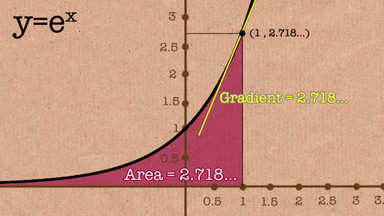

Math has many important constants that give the discipline structure,
like pi and i, the imaginary number equal to the square root of -1. But
one constant that’s equally important, though perhaps lesser known, is
Euler’s constant, e.
It shows up all the time in math and physics, most commonly as a base
in logarithmic and exponential functions. It’s used to calculate compounding
interest, the rate of radioactive decay, and the amount of time it takes to
discharge a capacitor. As Stefanie Reichert puts it in Nature Physics, “we
cannot escape Euler’s number.”
But where does Euler’s constant originate from? And what exactly
is it?
Euler’s constant—which you’ll also see some math experts refer to as Euler’s number—is an irrational number, meaning you can’t reduce it to a simple fraction. Just like pi, e’s decimals go on forever without repeating. If you want to get technical, this is what e looks like to the 100th decimal point:
2.71828182845904523536028747135266249775724709369995957 49669676277240766303535475945713821785251664274...
If you’ve ever taken an entry level calculus course, you’ve probably run into Euler’s constant,
since it’s the base for the natural logarithms. It looks like this: elnx= x.
While graphing the equation y=ex, you’ll find the slope of that curve at any given point
is also ex, and the area under the curve from negative infinity up to x is also ex.
Euler’s constant is the only number in all of mathematics that can be plugged into
the equation y=nx for which this pattern is true.
Pure mathematics is, in its way, the poetry of logical ideas.
Albert Einstein